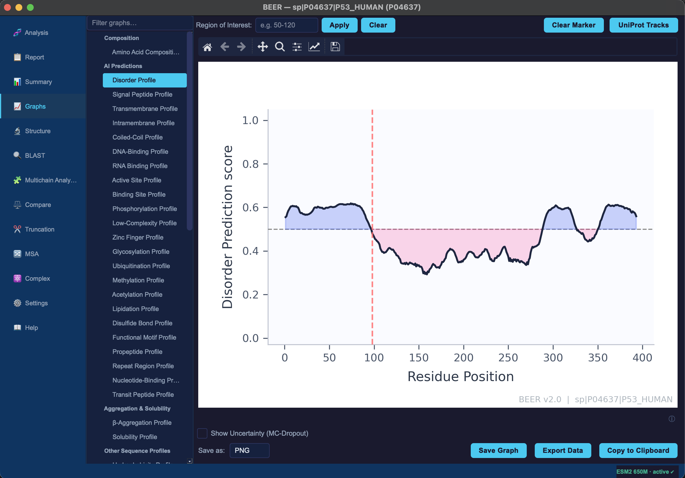
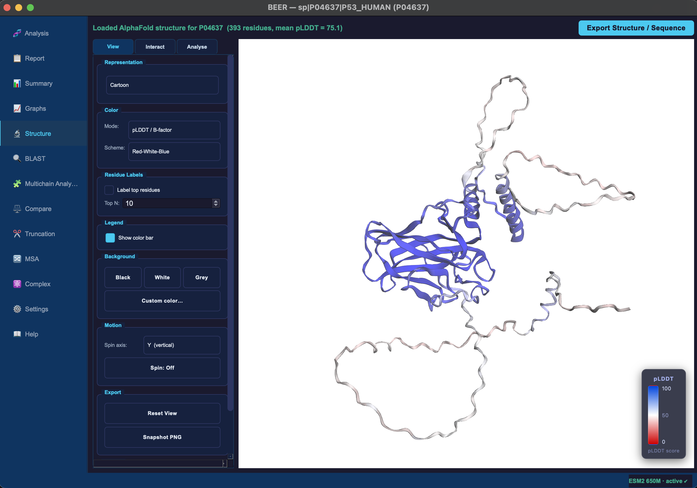
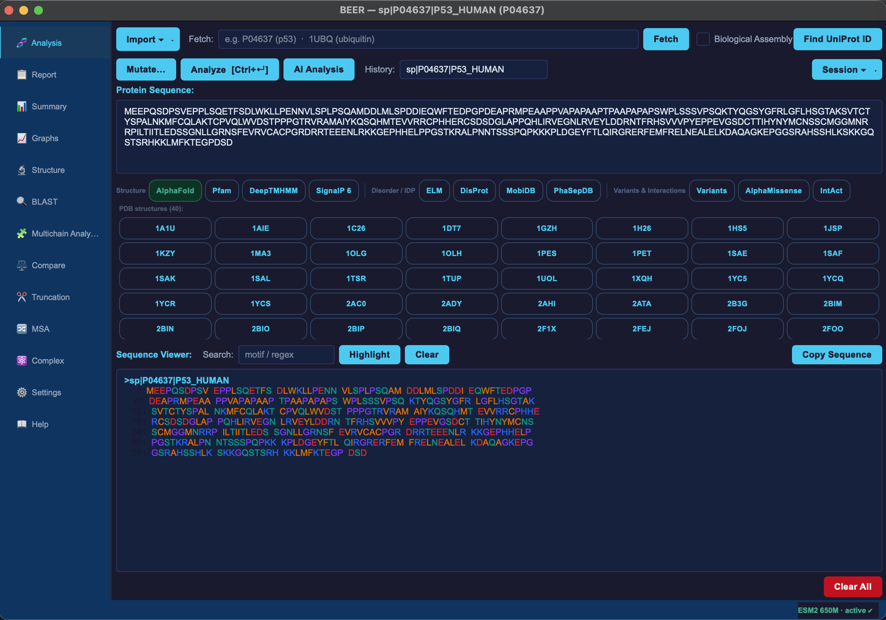

A cross-platform desktop tool that replaces a dozen web servers with a single, private, offline application — combining classical physicochemistry, 24 deep-learning prediction heads, and an interactive 3D structure viewer.



Protein analysis typically means shuttling between a dozen specialised web servers — each with its own format, latency, and privacy concern. BEER replaces that workflow.
All classical analysis and AI predictions run entirely on your machine. No sequence leaves your computer unless you explicitly fetch from UniProt or RCSB.
24 ESM2 BiLSTM heads (disorder, signal peptide, transmembrane, active site, PTMs…) displayed alongside classical profiles — with UniProt curated annotations overlaid for direct visual comparison.
Every graph exports at 200 dpi in PNG, SVG, or PDF. Underlying data exports as CSV or JSON. A built-in Figure Composer assembles multi-panel publication figures without leaving the app.
Every graph is interactive and zoomable. Inline format selector and colormap picker sit directly below each graph — no round-trip to a settings menu.
Classical analysis works out of the box. Add the optional PyTorch + ESM2 block to unlock all 24 AI prediction heads.
AI heads require torch ≥ 2.0 and fair-esm.
See the full installation guide for Linux Qt library setup and Windows-specific notes.
If you use BEER in your research, please cite:
Mukherjee, S. BEER: Biophysical Evaluation Engine for Residues.
arXiv preprint arXiv:2504.20561 (2025).
https://doi.org/10.48550/arXiv.2504.20561 ↗